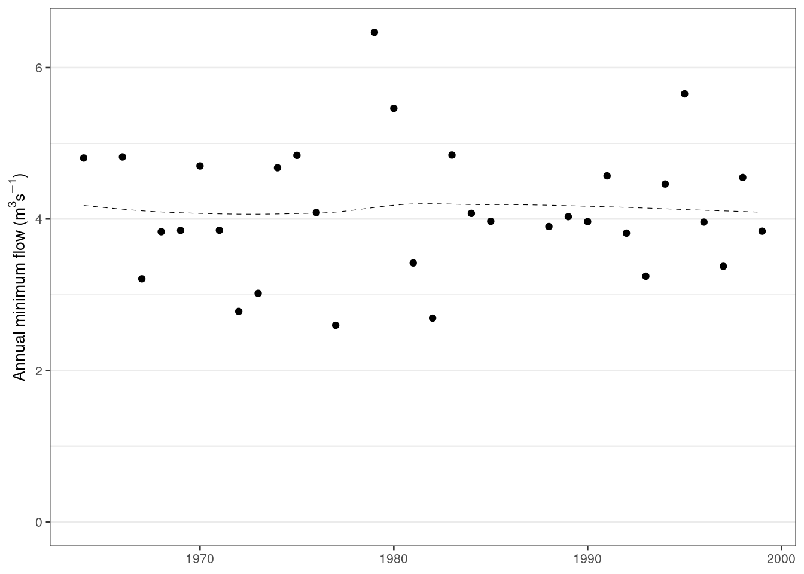
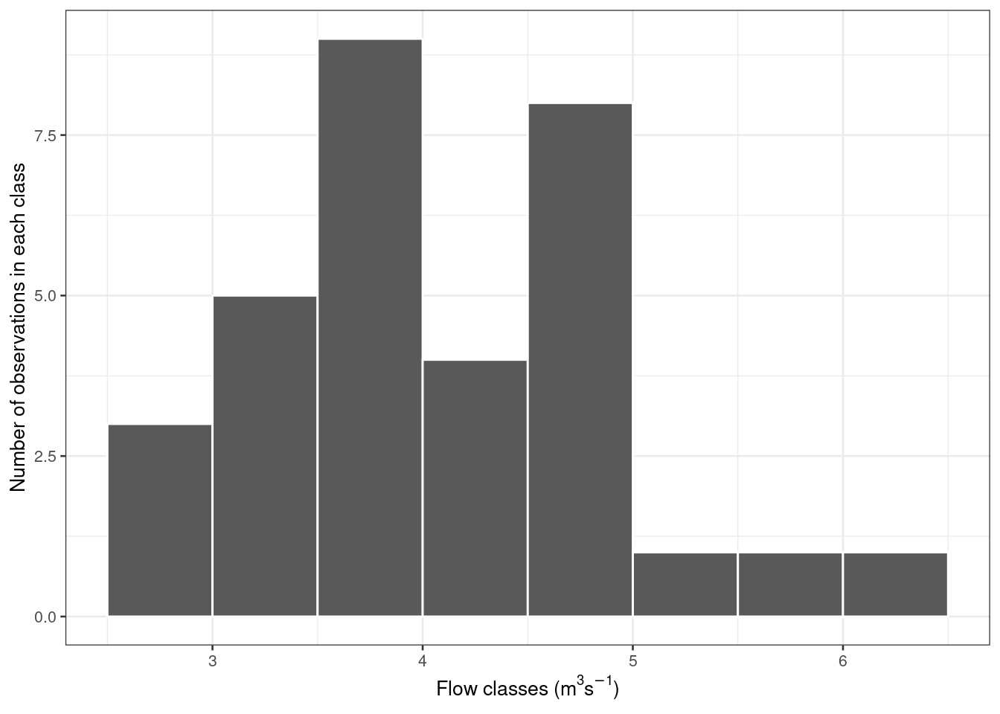
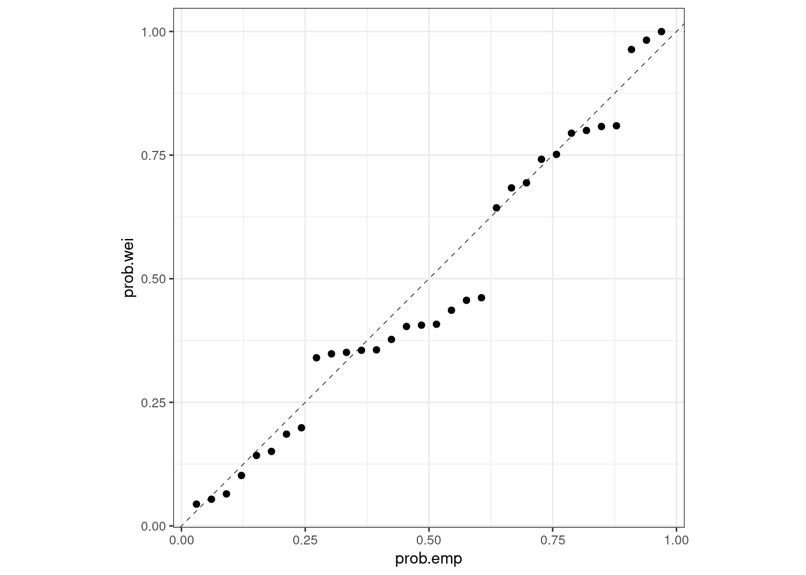

River Ngaruroro at Kuripapango in New Zealand (Table 4.3), has been selected for frequency analysis of annual minimum 1-day values, \(AM(1)\), using the Weibull (WEI) distribution. In mid-latitudes in the Northern Hemisphere the calendar year can often be used to select the annual minimum flows. This is a suitable period for the selection of independent events as the drought or low flow period commonly occurs during the summer months. In the Southern Hemisphere the low flow season occurs at the opposite time of the year, and for Ngaruroro the lowest flows are typically found in the period November to May. As a result \(AM(1)\) flows were selected for a hydrological year starting at the 1st September.
1 Tobias: Right now the old dataset is used to make sure we can reporoduce the numbers from the first edition. Changing to the new dataset will change the results quite a little.
# remove the same years as in figure 6.9 of the first edition
incomplete <- tibble(year = c(1965, 1978, 1986, 1987, 2000))
# derivation of the annual minima, first remove years with missing values
am <- ngaruroro %>%
anti_join(incomplete, by = "year") %>%
group_by(year) %>%
summarise(flow = min(discharge, na.rm = TRUE)) %>%
arrange(flow)
Figure 6.9 Time series of annual minimum 1-day flow, AM(1), for River Ngaruroro at Kuripapango (NZ).

Sample annual minimum 1-day flow, AM(1), for River Ngaruroro at Kuripapango (NZ); histogram

Ngaruroro has a flashy river regime, but has no observed zero flows. The \(AM(1)\) flows are considered to come from the same population as only a minor part of the catchment is influenced by snow in winter. The observations cover the period 1964 to 1964 and with the omission of 5 years (1965, 1978, 1986, 1987 and 2000) with missing data a total of 32 values results. A histogram of the values is shown in Figure 6.3 (upper left). To test the assumption of stationarity the \(AM(1)\) values are plotted against time in Figure 6.9. No trend can be detected in the series and the data are therefore assumed to fulfil the requirement of independent and identically distributed data (iid).
2 Derivation of an empirical distribution function
The \(x\) values, AM(1), are sorted in ascending order and the rank of each value is calculated. The smallest value equals 2.596 in m3s-1 and is given rank 1.
The non-exceedance probability, \(F(x) = p\), (column prob.emp) is calculated for each \(x\) value using the Weibull plotting position formula \(p_i = i / (n + 1)\) (Equation 6.6).
A probability plot for the \(AM(1)\) values is obtained by plotting the flow values against \(F(x)\) as demonstrated in Figure 6.10 (upper). A staircase pattern of several nearly equal values is observed. (Note that the \(AM(1)\) values now are plotted on the \(y\)-axis as compared to Figure 6.3, lower).
The return period (column rp.emp) of the smallest event can be calculated following Equation 6.5. The non-exceedance frequency, \(F(x)\), of the smallest event equals 0.03 according to step 2(b), which gives a return period of 33 years.
3 Fitting a distribution
Fitting the two-parameter Weibull (WEI) distribution function (Section A6.1.4) using the method of L-moments and the fact that \(Y = −\ln(X)\) has a Gumbel distribution if \(X\) has a WEI distribution. 2 The direct estimation of the Weibull parameters is shown in section Fast Track.
The first two L-moments (\(\hat\lambda_1\) and \(\hat\lambda_2\)) are estimated based on time series of \(\ln(x)\). These so called sample L-moments are calculated with the function samlmu() from the package lmom.
The parameter estimates of the WEI distribution (shape parameter \(\kappa\), scale parameter \(\alpha\)) are obtained following Stedinger et al. (1993):
\(\hat\kappa = \frac{\ln(2)}{\hat\lambda_2}\) and \(\hat\alpha = \exp\left( \hat\lambda_1 + \frac{0.5772}{\hat\kappa}\right)\)
3 Tobias: The shape parameter \(\hat\kappa\) differns quite a lot from the result by the lmom-package (\(\hat\kappa = 5.502302\)). I cannot figure out why thats the case. Susbsequently the quantile and probability estimates in section Fast-Track are also slightly off.
Figure 6.10 (upper): Estimated quantiles for annual minimum 1-day flow, AM(1), for River Ngaruroro at Kuripapango (NZ); probability plot showing the Weibull distribution (curve).
Figure 6.10 (lower): QQ-plot of empirical quantiles versus Weibull quantiles

4 Tobias: The plot doesn’t show quantiles (as mentioned in the first edition where it is called a QQ-Plot), but probabilities…
The data can be plotted in a probability plot and compared to the empirical quantiles in step 2(b) (Figure 6.10, upper). The plot shows that the WEI distribution is well adjusted to the low flow extreme values, whereas the deviation in the upper range might suggest that the three highest values do not belong to the low flow population (Section 6.3.3). In Figure 6.10 (lower) the empirical quantiles are plotted against the estimated distribution quantiles (qq-plot). The points should be close to the unit diagonal if the data fit the WEI distribution well. The use of a plotting position implies that the ordered sample is plotted in regularly spaced positions. As demonstrated in the figure, the observed jumps in \(AM(1)\) values are reflected in the estimated Weibull quantiles, but not in the empirical quantiles.
The non-exceedance frequency of the smallest value equals 0.0441 (Equation A6.1.33), which gives a return period of 22.7 years (Equation 6.5). This is 10.3 years less that the empirical estimate derived in step 2(d).
which gives: \(\hat x_{50} = 2.26\)m3s-1 and \(\hat x_{100} = 2.00\)m3s-1.
4 Fast Track
To obtain L-moment estimates of the two parameter Weibull distribution the lower bound (location parameter \(\xi\)) is set to zero otherwise a three parameter distribution is fitted.
For comparison of the two-parameter EXP (Equation A6.1.64) and WEI distribution the exponential reduced variable is applied (Box 6.4). By substituting \(y\) into the expression for \(F(x)\), \(y\) can be expressed as \(-\ln(1 - F(x))\) (Equation B6.4.6). The parameters of the EXP distribution are estimated using L-moments (Equation A6.1.72) and used to calculate \(y\) and subsequently \(F(x)\).
The non-exceedance probability \(F(x)\) for the observations is determined using the Weibull plotting position formula (Equation 6.6).
The \(AM(1)\) values are plotted against the reduced variate in Figure 6.11. A reduced variate of \(0.02\) corresponds to a return period of \(50.5\) years for minimum values (Equation 6.5). The data will plot as a straight line given they follow the EXP distribution. Again it is demonstrated that the WEI distribution fits the extreme low flow values well, and also the upper range apart from the three largest values. The two-parameter EXP distribution is less suited to model the sample. Alternatively, \(\ln(X)\) could be plotted on a Gumbel probability paper, and a straight line would result provided the data fitted the WEI distribution.
Figure 6.11: The annual minimum 1-day flow, AM(1), plotted against the reduced variate, y, of the EXP distribution for River Ngaruroro at Kuripapango (NZ); the observations marked as points, the two-parameter EXP distribution (continous line) and the two-parameter WEI distribution (dashed line).